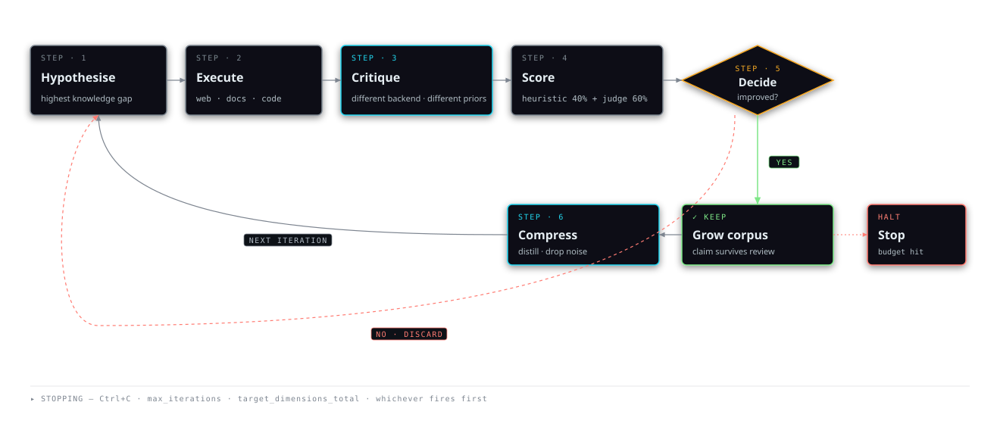
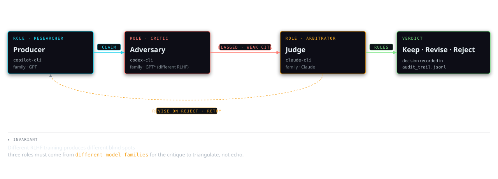
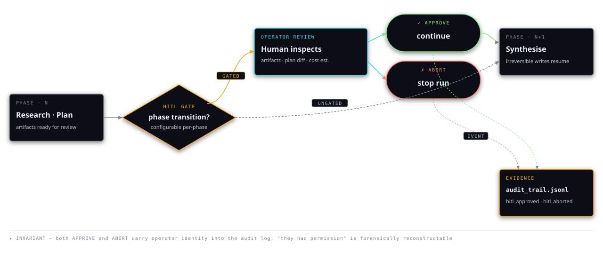

Multi-LLM Adversarial Convergence Framework
Make competing LLMs argue until they converge on the best answer
Staged demo — this is a real run played back at speed.
All artifacts shown are live outputs from the actual execution.
The problem
Single-model research is non-deterministic and unverifiable.
One LLM, one pass, one perspective.
You can't know what it missed, what it fabricated with confidence, or whether a different model would have reached the same conclusion.
This framework's answer:
- Run multiple backends on the same topic
- Make them score, critique, and argue with each other
- Keep only what survives adversarial review
- Emit a full evidence trail so you can audit every claim
Origin: Karpathy's autoresearch
The loop isn't original. Andrej Karpathy's autoresearch runs:
modify code → train 5 min on GPU → measure loss → keep or revert
The insight: this shape applies to anything you can score.
Karpathy's autoresearch |
This framework |
|---|---|
| GPU training run | LLM backend call |
| Loss function | Heuristic 40% + LLM judge 60% |
| Neural network weights | Knowledge corpus |
| ~5 min per iteration | One backend call per iteration |
| Stops when loss plateaus | Stops on max_iterations or target_dimensions_total |
Same loop. Different substrate: knowledge instead of weights.
The loop

I · PATTERNS
Agentic Design Patterns
Engine · Topology · Guardrails
11 named patterns from the research literature — each cited, each replaceable.
Why these patterns matter
This codebase is not a collection of hacks.
- Replaceability — when a pattern is named, swapping the implementation is mechanical
- Defensibility — code review can ask "is this Evaluator-Optimizer or Reflection?" instead of "is this fine?"
- Onboarding — new contributors recognise shapes; they don't have to reverse-engineer intent
11 patterns: engine (3) + topology (5) + guardrails (3).
1 · Evaluator-Optimizer
The outer loop. Propose, score, keep or discard, repeat.

Reference: Anthropic — Building Effective Agents
2 · LLM-as-Judge
A different model scores the candidate. No self-grading.

Reference: agentic-design.ai — LLM-as-Judge · arXiv 2410.10934
3 · Reflection / Self-Compression
Every N iterations: distill the corpus, drop noise.

Reference: Andrew Ng — Agentic Patterns
4 · Orchestrator / Subagents
One owner of lifecycle. Many narrow-contract workers.

Reference: Anthropic — Building Effective Agents
5 · Multi-Agent Role Topology
Configure roles, not models. Swap backends without changing logic.

Reference: arXiv 2405.10467 — Multi-Agent Role Topology
6 · Routing / Specialist Dispatch
Each dimension goes to the backend best suited for it.

Reference: Anthropic — Building Effective Agents
7 · Parallelization (Ensemble)
Fan out to all backends in parallel. Merge via judge.

Reference: Anthropic — Building Effective Agents
8 · Prompt Chaining (Serial)
Backends take turns. Each stage receives the previous stage's output.
Reference: Anthropic — Building Effective Agents
9 · Adversarial Critique
Researcher · Critic · Arbitrator — across different model families.

Reference: arXiv 2305.19118 — Multi-Agent Debate
10 · Tool Use + Sandboxed Execution
The capability registry is the agentic equivalent of an IAM policy.

Reference: Anthropic — Writing Tools for Agents
11 · Human-in-the-Loop (HITL)
Phase-transition gates. Operator approves before irreversible actions.

Reference: LangGraph — Human-in-the-Loop
How they compose — the strategy lattice
| Layer | Patterns | Concern |
|---|---|---|
| Engine | Evaluator-Optimizer · LLM-as-Judge · Reflection | What makes a single iteration meaningful |
| Topology | Orchestrator · Role Topology · Routing · Parallel · Serial | How backends are wired and dispatched |
| Guardrails | Adversarial Critique · Sandbox · HITL | What prevents the agent from doing the wrong thing |
A configured strategy is a tuple over the layers. Demo run =
Adversarial Critique(guardrail) overSerial Chaining(topology) usingEvaluator-Optimizer + LLM-as-Judge(engine), withSandboxalways on.
II · DEMO
Demo
AWS API Gateway — a real architecture question
"Which AWS API Gateway option should an enterprise platform choose for REST and WebSocket APIs — and when should it not migrate?"
The config — three backends, adversarial strategy
# configs/research/aws_api_gateway_opus_sonnet_codex.yaml
research:
topic: >
Compare AWS API Gateway options for enterprise REST and WebSocket APIs.
goal: >
Produce an architect-level comparison of REST API, HTTP API, and
WebSocket API with a recommendation per use-case bucket.
execution:
strategy: adversarial
backends:
primary: claude_opus # claude-cli (Opus)
research: [claude_sonnet] # claude-cli (Sonnet)
judge: codex_critic # codex-cli (GPT-5.4) ← critic + judge
utility: codex_critic
target_dimensions_total: 13
allowed_tools: "WebSearch,WebFetch,Read,Bash,Glob,Grep"
Researcher and critic are deliberately separated. The critic is also the judge, so every dimension is reviewed from a different model family.
Dry-run first — validate without spending tokens
Output confirms:
- All backend adapters resolve and answer a tiny
OKpreflight - Strategy is valid for the declared role topology
- Tool capability registry is satisfied
- Sandbox policy is coherent
Real run — and the replay dashboard
Once the dry-run passes, run for real. The full execution streams to audit_trail.jsonl \u2014 every iteration's hypothesis, score, and KEEP/DISCARD decision is replayable.
▸ Open live replay dashboard step through the real iterations \u00b7 \u2197
III · ADVERSARIAL
Adversarial critique in action
What the critic actually said — from the real run
The critic finds real errors
Iteration 014 — the rerun completes the CORS dimension after the earlier quota crash. Score: 101.5
The judge backend (GPT-5.4) keeps the result, but still opens concrete follow-up gaps:
"Verify HTTP API rejected-origin behavior with a primary source or reproducible test."
"Re-check HTTP API authorizer interaction when CORS is enabled, especially the $default-route case."
"Separate documented behavior from inferred or implementation-specific behavior."
These are not style comments. They are architecture risks — exact status codes, headers, authorizer paths, and IaC behavior are the difference between a working browser API and a production incident.
The loop preserves those gaps in discovered_gaps.json so a later pass can target them directly.
Score progression — convergence is measurable
Each bar is one iteration. Score = heuristic (40%) + LLM judge (60%).
| Iteration | Dimension | Score | Decision |
|---|---|---|---|
| 001 | REST API vs HTTP API | 84.5 | KEEP |
| 002 | WebSocket API lifecycle | 84.3 | KEEP |
| 003 | AuthN/AuthZ | 83.5 | KEEP |
| 005 | Integration patterns | 84.8 | KEEP |
| 009 | CORS preflight | 0.0 | CRASH |
| 012 | Cost modeling | 83.7 | KEEP |
| 013 | Deployment lifecycle / IaC | 83.7 | KEEP |
| 014 | CORS preflight rerun | 101.5 | KEEP |
Iteration 009 was a real failure: Claude ran out of tokens during CORS.
Resume preserved the previous corpus, reran only the missing dimension, and finished with 13 kept dimensions.
From one corpus — three artifacts
The research loop runs once. The output style is a rendering decision, not a research decision.
reporting:
output_style: technical_doc # default | paper | technical_doc | executive_brief | decision_memo
Re-render any past run without re-running research:
Same data. Same citations. Different artifact.
Output: default — for internal exploration
Quick narrative synthesis for the AWS API Gateway decision: recommendations first, then dimensions, caveats, and references.
Use when:
- Sharing the run with engineers during discovery
- Scanning REST vs HTTP vs WebSocket trade-offs
- Fast iteration before committing to a formal memo
Closest analog: a thorough Notion research page
Output: paper — for stakeholders and external review
Abstract, methodology section, evidence-backed claims, and deterministic references built from the same AWS corpus.
Use when:
- Writing for external review
- Stakeholder reports where evidence provenance matters
- Anything that will be cited downstream
Closest analog: a literature review or RFC with bibliography
Output: technical_doc — for engineering decisions
Comparison tables, decision matrix, recommendation upfront, and explicit disqualifiers for REST API, HTTP API, and WebSocket API.
Use when:
- Architecture Decision Records (ADRs)
- Platform architecture reviews
- Decision memos for engineering teams
Closest analog: an RFC or ADR with a verdict
Every run is fully replayable
output/aws_api_gateway_opus_sonnet_codex/
├── run.log ← human-readable operational log
├── audit_trail.jsonl ← append-only structured trail: steps, tool calls, denials, policy events
├── effective_config.json ← full normalized config snapshot at run time
├── tool_trace.json ← per-tool args + truncated outputs
├── prompt_snapshot.json ← exact prompts sent at run start
├── rerun.sh ← runnable exact-replay script
├── iterations/
│ ├── iter_001.md ← hypothesis + findings + critique + score
│ └── iter_014.md ← CORS rerun after quota failure
├── report_default.html ← exploratory rendering
├── report_paper.html ← paper-style rendering
└── report_technical_doc.html ← engineering decision rendering
rerun.sh is not documentation — it's an executable that reconstructs the exact run.
No "it worked on my machine."
Trust + certainty — every claim is classified
Every entry in citations.json and claims.json carries a trust_class:
| Class | Meaning |
|---|---|
untrusted_web_content |
URL citation from live web search — treat as external, unverified |
user_provided_source_material |
Operator-provided input files — trusted by the operator |
inferred_claim |
LLM-synthesised without a direct citation — explicitly flagged |
Plus PRISMA-style evidence logs:
search_log.json— what was searched, when, from which backendscreening_log.json— what was included or excluded, and whycertainty_tables.json— first-pass certainty score per claim
Readers know exactly how strong each conclusion is before acting on it.
This run
Real execution data from the aws_api_gateway_opus_sonnet_codex run:
| Metric | Value |
|---|---|
| Backends | claude-cli (Opus + Sonnet) · codex-cli (GPT-5.4 critic/judge) |
| Strategy | adversarial — researcher + critic + arbitrator |
| Dimensions covered | 13 of 13 |
| Iterations | 14 raw attempts → 13 kept dimensions after the CORS rerun |
| Best score reached | 101.5 composite score on the CORS rerun |
| Output formats generated | 3 (default, paper, technical_doc) |
| Execution cost | $0.00 tracked for CLI adapters during the final resume/synthesis pass |
CLI adapters reuse existing Claude Pro / Copilot / Codex subscriptions — flat cost, not per-token.
API adapters (for CI/unattended runs) bill per-token. Choose based on context.
What you just saw
- Two different model families argued about AWS API Gateway architecture across 13 kept dimensions
- The critic (GPT-5.4) found real unresolved risks in CORS, authorizers, pricing, and evidence confidence
- The loop survived a quota failure: the bad CORS attempt was excluded and the missing dimension was rerun
- Three publication-ready artifacts were produced from one research corpus
- Every claim carries a
trust_class, and the report still flags where citations are too thin - The full run remains replayable through
audit_trail.jsonl,results.tsv, andrerun.sh
The adversarial loop isn't about being clever. It's about the same engineering principle
as code review: a second set of eyes with different priors catches different bugs.
Multi-LLM Adversarial Convergence Framework
| Version | 0.x — research preview |
| Repo | github.com/josefigueredo/multillm-adversarial-convergence |
| License | See repository |
| Patterns | 11 — Engine (3) · Topology (5) · Guardrails (3) |
| Backends | Claude · Copilot · Codex · Gemini · API + CLI adapters |
| Outputs | default · paper · technical_doc · executive_brief · decision_memo |
Try it
Copy a template for your own topic: configs/research/_template.yaml · Read on: docs/research.md · docs/design/agentic-design-patterns.md · AGENTS.md